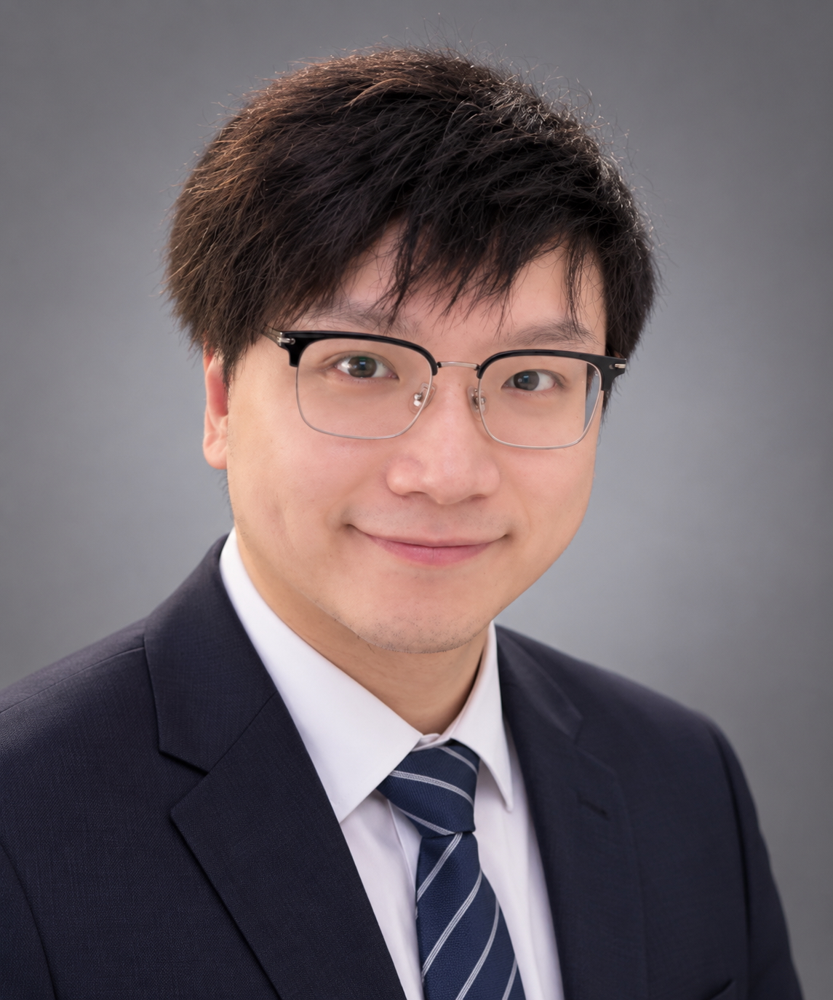

|
 |
Xiaomin LinAssistant ProfessorUniversity of South Florida Electrical Engineering Bellini College of AI, Cybersecurity and Computing (Affiliated) Institute for AI + X (Researcher) Director, ERA Lab [LinkedIn] [Google Scholar] [cv] [ResearchGate] [dblp] [ORCID] |
I am a Tenure-Track Assistant Professor of Electrical Engineering at the University of South Florida, with an affiliated appointment in the Bellini College of Artificial Intelligence, Cybersecurity and Computing (Computer Science) and a researcher appointment in the Institute for Artificial Intelligence + X. My work spans edge AI, perception-enabled robotics, and intelligent systems for challenging environments, including underwater, agricultural, and healthcare domains.
I direct the ERA Lab (Embodied Robotics and Autonomy), which focuses on robotics, multimodal perception, and AI for challenging environments.
🌱🌟 I am actively recruiting PhD students to join my lab starting Spring 2027 and Fall 2027. I also welcome collaboration in robotics, AI, edge computing, and medical or underwater applications.
📬 If you are interested, please fill out the form after reading my Research Statement pdf. Ideally, I am looking for experienced students with a top-tier publication and an MS degree in related fields, and a strong background in robotics, AI, or embedded systems. Only if you are at USF, feel free to email me with your CV, transcripts, and a brief statement of research interests and career goals. Unfortunately, I cannot respond to all inquiries, especially those without sufficient information.
I received my PhD in Electrical and Computer Engineering from the University of Maryland, advised by Prof. Yiannis Aloimonos. My research lies at the intersection of robotics and perception, with emphasis on autonomous underwater systems. I build frameworks for autonomous underwater vehicles to detect and map marine objects such as oyster beds and coral reefs using real and synthetic data, simulation-based methods, and multimodal sensing.
Before joining USF, I was a postdoctoral researcher with the Energy Efficient High Performance Computing Lab (EEHPC) at Johns Hopkins University, directed by Dr. Tinoosh Mohsenin, where I was also an Institute for Assured Autonomy Postdoctoral Fellow. There I expanded my focus to integrating large language models with knowledge graphs for advanced reasoning and decision making, and to building efficient algorithms and frameworks for deployment on edge devices and robots.
I collaborate widely across marine robotics and AI, including Prof. Shahriar Negahdaripour Miami, Prof. Ioannis Rekleitis Delaware, Prof. Leonardo Bobadilla Florida International University, Dr. Nare Karapetyan WHOI, Dr. Marios Xanthidis SINTEF Ocean, Dr. Yewei Huang Dartmouth College, and Prof. Jane Shin Florida.
I also work with collaborators across biology, computing, and robotics such as Dr. Isla Duporge Princeton, Prof. Kevin Boswell FIU, and Prof. Dongyi Wang Arkansas.
In Maryland, I have collaborated with Prof. Matthew Gray UMCES, Prof. Miao Yu, Prof. Nikhil Chopra.
At the 2024 Autonomous Systems Bootcamp, I led a team from eight institutions and companies, resulting in a joint publication on the Odyssee project [Odyssee] as lead and corresponding author.
DEVCOM Army Research Laboratory (ARL) CRADA — Efficient Multimodal Learning (ARL CRADA 22-0034-J003)
Technical point of contact, effective January 2026. Led the joint work statement and research plan for efficient multimodal learning in edge-deployed agentic systems, spanning retrieval-augmented generation and model efficiency, with joint integration across USF and ARL teams.
Air Force Research Lab (AFRL) STTR Phase II — Mobile Software Tool for Counting Small Objects Using Computer Vision and Machine Learning
Primary contributor, 2020–2021. Proposed the original idea, led the preliminary project, authored the proposal, and delivered the final project presentation.
PhD students: Zhenqi Wu, Utkarsh Grover, Mingyang Mao, Trung Dong, Sheimy Paz Serpa, Mohammed Ibrahim M
MS students: Lara Radovanovic, Tanvir Ibrahim, Urja Panta, Seyoung Kan
Undergraduate researchers: Sahasra Kondapalli, Poyraz An, Trung Nhan Ngo, Bao Dinh, Minh Duong Nguyen, Mohamed Fouad
Affiliated students: Aadi Palnitkar Maryland, Ravi Ranjan FIU, Yuanjie Lu George Mason, Yisheng Zhang Maryland, Yangsheng Xu Maryland
ISR Honors 2025 Graduate Achievements · May 2025
University of Maryland, College Park
🌐
Postdoctoral Fellow · Jan 2025 to Aug 2025
Institute for Assured Autonomy, Whiting School of Engineering, Johns Hopkins University
🌐
Best Paper Award · Oct 2024
Autonomous Robotic Systems in Aquaculture Workshop, Abu Dhabi, IROS
🌐
Best Poster Award · May 2023
Maryland Robotics Center (MRC) Research Symposium
🌐
Image Segmentation Challenge, Third Place · Dec 2020
Northrop Grumman